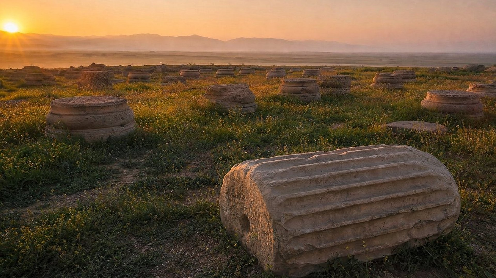

Babylone vient de tomber. Le vieux prophète Daniel relit les écrits de Jérémie et comprend que les 70 années de désolation de Jérusalem touchent à leur fin (salle 06). Il prie pour son peuple. La réponse qu’il reçoit annonce un nouveau compte à rebours : « 70 semaines ».
Le texte ne se contente pas d’annoncer le Messie : il fixe un point de départ, l’ordre de rebâtir Jérusalem, et une durée. Sept semaines, puis soixante-deux, puis une dernière semaine coupée en deux. Ce sont des semaines d’années : 490 ans en tout.
C’est la seule prophétie biblique qui permette de calculer l’année où le Messie devait paraître. Essayez vous-même ci-dessous.
Et sache, et comprends: Depuis la sortie de la parole pour rétablir et rebâtir Jérusalem, jusqu’au Messie, [le] prince, il y a 7 semaines et 62 semaines ; la place et le fossé seront rebâtis, et [cela] en des temps de trouble.
Daniel 9:25
Darby 1885
70 semaines ont été déterminées sur ton peuple et sur ta sainte ville, pour clore la transgression, et pour en finir avec les péchés, et pour faire propitiation pour l’iniquité, et pour introduire la justice des siècles, et pour sceller la vision et le prophète, et pour oindre le saint des saints.
Daniel 9:24
Darby 1885
Exploration interactive
Le calculateur des 70 semaines
Choisissez une année de départ. Le calculateur ajoute 49, 483, 486 ans et demi puis 490 ans, sans oublier qu’il n’existe pas d’année zéro entre 1 av. n. è. et 1 de n. è.
7 sem.62 semaines (434 ans)1
455 av. n. è.406 av. n. è.36 de n. è.
Zoom sur la 70e semaine
3 ans ½3 ans ½
293336
Après 7 semaines · 49 ans
406 av. n. è.
Jérusalem et sa muraille rebâties « en des temps de trouble ».
Aucun événement correspondant n’est rapporté pour cette année.
Après 69 semaines · 483 ans
29 de n. è.
Baptême de Jésus : il devient le Messie, « l’Oint ».
Aucun événement correspondant n’est rapporté pour cette année.
Après 69 semaines ½ · 486 ans ½
33 de n. è.
Mort de Jésus, « au milieu de la semaine ».
Aucun événement correspondant n’est rapporté pour cette année.
Après 70 semaines · 490 ans
36 de n. è.
Corneille, premier non-Juif accueilli.
Aucun événement correspondant n’est rapporté pour cette année.
De 455 av. n. è. à 1 av. n. è. : 455 ans. Il reste 483 − 455 = 28 ans, comptés à partir de l’an 1 : on arrive en 29 de n. è.
Départ en 455 av. n. è. : 7 semaines mènent à 406 av. n. è., 69 semaines à 29 de n. è., le milieu de la 70e semaine à 33 et sa fin à 36.
Néhémie 2 · Suse
« La vingtième année du roi Artaxerxès »
Reconstitution numériqueNéhémie, échanson du roi, présente la coupe à Artaxerxès.
Néhémie est un Juif de l’exil, échanson du roi de Perse : c’est lui qui sert le vin au souverain. Un jour du mois de nisan, le roi remarque sa tristesse. Néhémie ose une requête : être envoyé à Jérusalem pour la rebâtir. Le roi accepte et lui remet des lettres pour les gouverneurs et pour le bois de construction.
Arrivé sur place, Néhémie mobilise la population. Malgré les menaces des peuples voisins, la muraille est achevée en 52 jours (Néhémie 6:15). La ville, elle, mettra des décennies à se relever, « en des temps de trouble ».
et je dis au roi: Si le roi le trouve bon, et si ton serviteur est agréable devant toi, qu’il m’envoie en Juda, à la ville des sépulcres de mes pères, et je la bâtirai.
Néhémie 2:5
Darby 1885

Reconstitution numériqueSuse aujourd’hui : les bases de colonnes du palais où servait Néhémie.
Suse, au sud-ouest de l’Iran actuel, était l’une des capitales de l’Empire perse. Les fouilles y ont dégagé le palais royal et sa grande salle à colonnes, l’Apadana. Il n’en reste aujourd’hui que des bases de colonnes et des fragments de chapiteaux.
C’est dans ce cadre que le livre de Néhémie situe l’entretien avec le roi (Néhémie 1:1). Le décor du récit, avec la cour perse, l’échanson et les lettres royales, correspond à ce que l’on sait de l’administration achéménide.
Vérification
Six jalons d’un compte à rebours
01Détail 1
Point de départ : « la parole pour rétablir et rebâtir Jérusalem ».
« Et il arriva au mois de Nisan, la vingtième année du roi Artaxerxès, comme le vin était devant lui, que je pris le vin et le donnai au roi ; et je n’avais pas été triste en sa présence. »
Ce que le musée en lit
Au mois de nisan de la 20e année d’Artaxerxès, Néhémie obtient du roi l’autorisation de rebâtir la ville et sa muraille. Le musée retient l’an 455 avant notre ère ; la chronologie courante retient 445. Les deux positions et leurs arguments sont présentés plus bas.
Niveau de preuve : DÉBATTUPreuves : PR-080, PR-082
02Détail 2
Après 7 et 62 semaines, soit 69 semaines d’années (483 ans), paraît « le Messie, le Chef ».
« Et sache, et comprends: Depuis la sortie de la parole pour rétablir et rebâtir Jérusalem, jusqu’au Messie, [le] prince, il y a 7 semaines et 62 semaines ; la place et le fossé seront rebâtis, et [cela] en des temps de trouble. »
Ce que le musée en lit
En comptant 483 ans à partir de 455 avant notre ère, sans année zéro, on arrive en 29 de notre ère. Cette année-là, la 15e du règne de Tibère selon Luc, Jean commence à baptiser ; à l’automne, Jésus, âgé d’environ 30 ans, est baptisé et oint pour sa mission : il devient le Messie, c’est-à-dire « l’Oint ».
Niveau de preuve : LECTURE PROPHÉTIQUEPreuves : PR-081
03Détail 3
Le Messie sera « retranché » et n’aura rien.
« Et après les 62 semaines, [le] Messie sera retranché et n’aura rien ; et le peuple du prince qui viendra, détruira la ville et le lieu saint, et la fin en sera avec débordement ; et jusqu’à la fin [il y aura] guerre, un décret de désolations. »
Ce que le musée en lit
Au printemps 33, le 14 nisan, Jésus est mis à mort sous Ponce Pilate. Il meurt en condamné, sans possessions et abandonné de presque tous.
Niveau de preuve : LECTURE PROPHÉTIQUEPreuves : PR-072
04Détail 4
« Au milieu de la semaine », il fait cesser le sacrifice et l’offrande.
« Et il confirmera une alliance avec la multitude [pour] une semaine ; et au milieu de la semaine il fera cesser le sacrifice et l’offrande ; et à cause de la protection des abominations [il y aura] un désolateur, et jusqu’à ce que la consomption et [ce qui est] décrété soient versés sur la désolée. »
Ce que le musée en lit
Trois ans et demi après l’automne 29, la mort de Jésus marque le milieu de la 70e semaine. Le temple continue de fonctionner jusqu’en 70, mais pour les premiers chrétiens, l’offrande du corps de Jésus « une fois pour toutes » ôte leur valeur aux sacrifices d’animaux (Hébreux 10:10).
Niveau de preuve : LECTURE PROPHÉTIQUE
05Détail 5
L’alliance est maintenue avec « la multitude » pendant une semaine.
« Et il confirmera une alliance avec la multitude [pour] une semaine ; et au milieu de la semaine il fera cesser le sacrifice et l’offrande ; et à cause de la protection des abominations [il y aura] un désolateur, et jusqu’à ce que la consomption et [ce qui est] décrété soient versés sur la désolée. »
Ce que le musée en lit
Pendant sept ans, de 29 à 36, la bonne nouvelle est réservée aux Juifs : Jésus envoie d’abord ses disciples « vers les brebis perdues de la maison d’Israël ». En 36, l’apôtre Pierre prêche au centurion romain Corneille et à sa maison : les non-Juifs sont désormais accueillis.
Niveau de preuve : LECTURE PROPHÉTIQUE
06Détail 6
« Le peuple du chef qui viendra » détruira la ville et le lieu saint.
« Et après les 62 semaines, [le] Messie sera retranché et n’aura rien ; et le peuple du prince qui viendra, détruira la ville et le lieu saint, et la fin en sera avec débordement ; et jusqu’à la fin [il y aura] guerre, un décret de désolations. »
Ce qui s’est passé
En 70 de notre ère, les armées romaines commandées par Titus prennent Jérusalem et incendient le temple (salle 11). Rome célèbre la victoire par des monnaies « Judée conquise ».
Niveau de preuve : DONNÉE HISTORIQUEPreuves : PR-093
Luc 3 · automne 29
« La quinzième année du règne de Tibère »
Reconstitution numériqueLe Jourdain : Jean baptise les foules venues de toute la Judée.
Luc date le début de la mission de Jean avec une précision d’historien : il cite l’empereur, le gouverneur, trois tétrarques et deux grands prêtres. Tibère ayant succédé à Auguste en 14, sa 15e année correspond à 28/29 (PR-081).
Quelques mois plus tard, à l’automne 29, Jésus vient se faire baptiser. Il a « environ 30 ans ». À partir de ce moment, il est l’Oint, le Messie. C’est exactement l’année à laquelle aboutissent les 69 semaines comptées depuis 455.
Luc note aussi que « le peuple était dans l’attente » (Luc 3:15). Rien ne permet d’affirmer que cette attente venait d’un calcul fondé sur Daniel : les interprétations de l’époque divergeaient, et les Évangiles ne font pas ce lien.
Or, en la quinzième année du règne de Tibère César, Ponce Pilate étant gouverneur de la Judée, et Hérode tétrarque de la Galilée, et Philippe son frère tétrarque de l’Iturée et de la contrée de Trachonite, et Lysanias tétrarque de l’Abilène, sous la souveraine sacrificature d’Anne et de Caïphe, la parole de Dieu vint à Jean, le fils de Zacharie, au désert.
Luc 3:1-2
Darby 1885
mais, quand l’accomplissement du temps est venu, Dieu a envoyé son Fils, né de femme, né sous [la] loi,
Galates 4:4
Darby 1885
Actes 10 · Césarée, 36
La fin de la 70e semaine
Selon Daniel 9:27, l’alliance devait être maintenue « avec la multitude » pendant une dernière semaine d’années. De 29 à 36, la prédication s’adresse d’abord aux Juifs : Jésus avait dit à ses apôtres de ne pas aller « sur le chemin des nations ».
En 36, l’apôtre Pierre est conduit à Césarée, chez Corneille, un officier romain « craignant Dieu ». Pour un Juif, entrer chez un non-Juif était impensable. Pierre déclare alors que Dieu « ne fait pas acception de personnes ». La 70e semaine s’achève et la bonne nouvelle s’ouvre à toutes les nations.
Et Pierre, ouvrant la bouche, dit: En vérité, je comprends que Dieu ne fait pas acception de personnes, mais qu’en toute nation celui qui le craint et qui pratique la justice, lui est agréable.
Actes 10:34-35
Darby 1885
Reconstitution numériquePierre chez Corneille, à Césarée.
Dossier
Pièces à conviction
Des manuscrits antérieurs aux faits, deux historiens antiques, une monnaie romaine et une datation discutée.
Niveau de preuve : DÉBATTUPR-050
Manuscrits de Daniel 4Q112-4Q116 ; datation de 4Q114
Nature
Manuscrits bibliques (Qumrân, grotte 4)
Date
230-160 av. n. è. (carbone 14 + IA, 2025)
Conservation
Autorité des antiquités d’Israël (bibliothèque numérique Leon Levy)
Inventaire
4Q114 (4QDan c)
Popović et al., PLOS One, 2025 : le fragment 4Q114 (Daniel 8-11) est daté par le carbone 14 de 230-160 av. n. è. Les auteurs notent que cette plage recoupe les années 160, où la majorité des chercheurs place la rédaction finale du livre. Le livre circulait donc au plus tard vers 160. Le musée suit la datation que le livre donne de lui-même (vie s.) en signalant le débat.
La chronologie courante fait régner Artaxerxès de 465 à 425 : sa 20e année tombe alors en 445. Le musée retient un avènement en 475/474, d’après Thucydide (PR-082) et des chronologies anciennes de la fuite de Thémistocle : la 20e année tombe alors en 455.
Thémistocle, exilé, écrit « au roi Artaxerxès, fils de Xerxès, qui venait de monter sur le trône ». La date de cet exil sert à fixer l’avènement d’Artaxerxès.
Tibère règne de 14 à 37. Comptée à partir de la mort d’Auguste (août 14), sa 15e année couvre 28/29 : début de la mission de Jean, puis baptême de Jésus en 29.
Bronze frappé à Rome (37 mm, 28,04 g). Au revers, autour d’un palmier : un captif debout et la Judée assise, en deuil ; légende « IVDAEA CAPTA », « la Judée conquise ».
La 20e année d’Artaxerxès tombe en 445, pas en 455.
C’est la datation majoritaire : la plupart des historiens placent l’avènement d’Artaxerxès en 465, en s’appuyant notamment sur des documents datés de Babylonie et d’Égypte. Le musée retient 475/474 à partir du témoignage de Thucydide, contemporain d’Artaxerxès, et de chronologies anciennes qui placent la fuite de Thémistocle vers 473. La question reste discutée, d’où le badge DÉBATTU.
Les Juifs attendaient le Messie parce qu’ils avaient fait ce calcul (Luc 3:15).
Rien ne permet de l’affirmer : les interprétations de Daniel 9 divergeaient à l’époque, et aucun évangéliste ne fait ce lien. L’attente du peuple s’explique par d’autres faits rapportés dans les Évangiles. Le musée présente les 70 semaines comme une prophétie accomplie, non comme la cause de cette attente.
Le livre de Daniel aurait été écrit au iie siècle avant notre ère, après les événements.
Même dans cette hypothèse, la prophétie pointe vers une année située près de deux siècles plus tard : l’apparition du Messie en 29 de notre ère. Aucune rédaction tardive ne peut expliquer cet accomplissement. Des manuscrits de Daniel retrouvés à Qumrân sont d’ailleurs antérieurs à Jésus.
Pourquoi des « semaines » d’années, et non des semaines de jours ?
Le mot hébreu signifie littéralement « sept » ou « septaine ». Le contexte parle d’années : Daniel vient de calculer les 70 années de Jérémie (Daniel 9:2). Ailleurs, la Bible applique le principe « un jour pour une année » (Nombres 14:34 ; Ézékiel 4:6). 490 jours, à peine plus d’un an, n’auraient laissé le temps ni de rebâtir la ville ni de voir paraître le Messie.